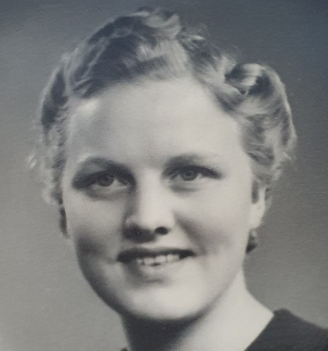

Skild 23 okt 1957 2 .
Helge Ragnar Karlsson Wennelid.

Född 24 feb 1922 i Drothem (E) 12 .
Död 14 maj 2001 på Solvägen 12, Gård 7, Kv Ulvåsa, Vättersnäs, Jönköping, Jönköpings Kristina (F) 2 .
|
Född
5 jun 1924
i Hemse (I)
1
.
Död 16 apr 2007 på Göransgatan 2, Vrigstad, Vrigstad-Hylletofta (F) 2 . |
 |
|
Märta Sylvia Dagny Wennelid f Jönsson
Född 5 jun 1924 i Hemse (I) 1 . Död 16 apr 2007 på Göransgatan 2, Vrigstad, Vrigstad-Hylletofta (F) 2 . |
|||
|
Gift
27 jul 1946
i Jönköpings Kristina (F)
11
.
Skild 23 okt 1957 2 . Helge Ragnar Karlsson Wennelid.
Född 24 feb 1922 i Drothem (E) 12 . Död 14 maj 2001 på Solvägen 12, Gård 7, Kv Ulvåsa, Vättersnäs, Jönköping, Jönköpings Kristina (F) 2 . |
Framställd 6 nov 2026 med hjälp av Disgen version 2025.
 Född
6 mar 1948
i Jönköpings Sofia (F)
Född
6 mar 1948
i Jönköpings Sofia (F)